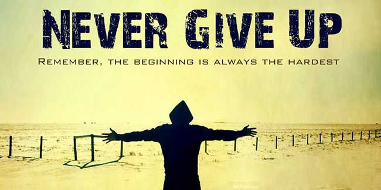
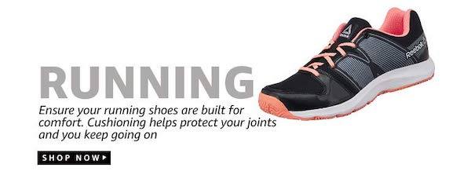

Skriešana Latvijā ir populārs tautas sporta veids.
Sporta veids, kurš pulcē vienuviet vairākus tūkstošus cilvēku. Dalībnieki dodas marķētā trasē kur sacenšas, ar sevi, laiku un konkurentiem.

Individuālu skrējieni
- Patria Mud race
- Patriotu skrējiens
- Rozentāla skriešanas svētki
- Vanagkalna skriešanas festivāls
- Jūrmalas color run
- Rīga-Valmiera skrējiensoļojums
- Cēsis eco Trail
- Pārspēj sevi jūdžu skrējiens
- Sveikuļu nakts skrējiens
- Latvia TrailRace 2020
- Zilonis Babītē
Vadošie sacensību seriāli Latvijā
- Stirnu Buks
- Noskrien Ziemu
- Skrien Latvija
- Vidzemes mežtakas (šogad notiks pirmo gadu, ceturdienu vakaros)
*Arī mūsu kaimiņu valstīs taku skriešanas seriālu guvuši lielu popularitāti